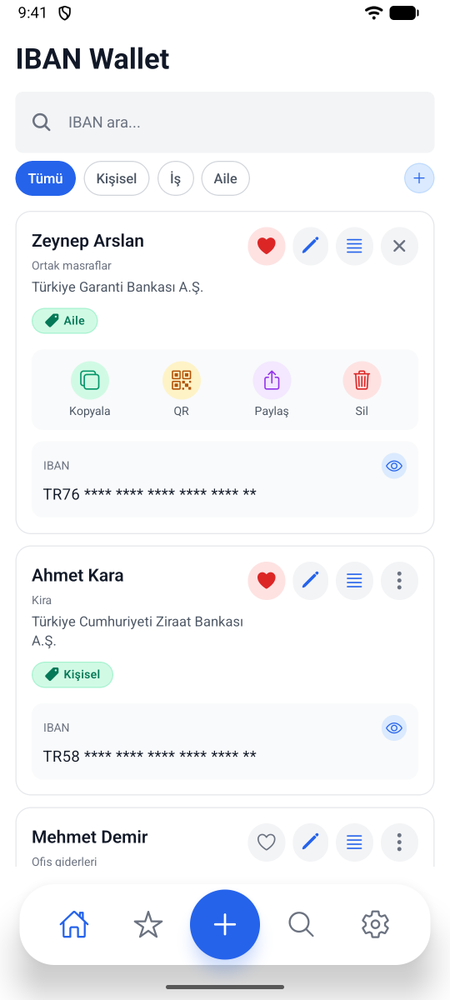
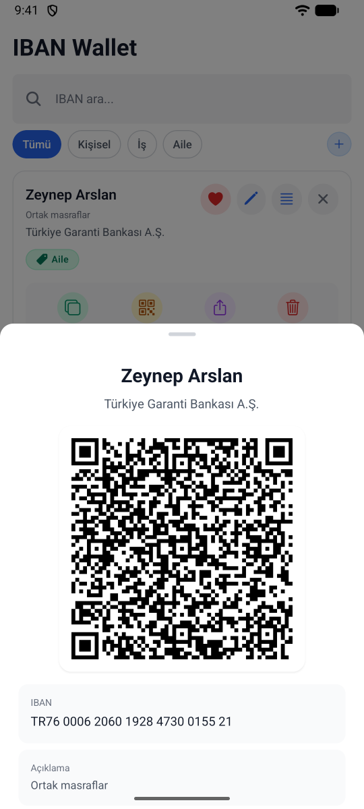
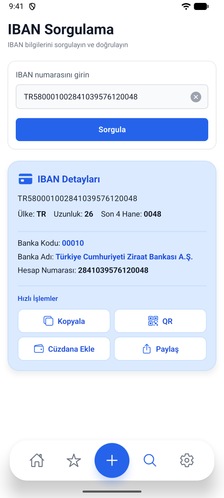
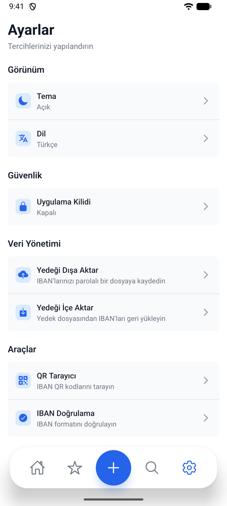

Şifreli saklama
IBAN'lar AES-256-GCM ile şifrelenir. Anahtar iOS Keychain veya Android Keystore'da durur.
IBAN Wallet, IBAN'larınızı cihazınızda şifreli saklar. Tek dokunuşla kopyalayın, paylaşın ya da QR kodla gösterin.
IBAN'larınızı kaydedin, düzenleyin ve saniyeler içinde paylaşın.
IBAN'lar AES-256-GCM ile şifrelenir. Anahtar iOS Keychain veya Android Keystore'da durur.
IBAN'ı QR kod olarak gösterin ya da bir QR kodu okutarak yeni IBAN ekleyin.
IBAN'ı kopyalayın ya da isimle birlikte istediğiniz uygulamadan gönderin.
Kişisel, İş, Aile ya da kendi etiketleriniz. Favoriler, arama ve sürükleyerek sıralama.
Her IBAN'ı kontrol rakamıyla doğrulayın. TR IBAN'larında banka adını görün.
Face ID, Touch ID, parmak izi veya cihaz şifresi. Arka planda kalınca otomatik kilitlenir.
Tüm IBAN'larınızı şifreli bir dosyaya kaydedin ve yeni telefona taşıyın.
Her şey cihazınızda. Uygulama hiçbir sunucuya bağlanmaz.
Açık, koyu ya da sistem teması. Türkçe ve İngilizce.

Her kartta ihtiyacınız olan işlemler hazır. Kimseye IBAN yazdırmak zorunda kalmayın.

IBAN'ı karşınızdakine QR kod olarak gösterin. O da IBAN Wallet ile okutup kaydetsin.

Para göndermeden önce IBAN'ın doğru olduğundan emin olun. Doğrulama tamamen cihazınızda yapılır.

IBAN'larınız sadece sizin. Telefonunuzu değiştirdiğinizde de yanınızda.
IBAN Wallet'ın sunucusu yok. IBAN'larınızı görmüyoruz, toplamıyoruz, hiçbir yere göndermiyoruz.
Gizlilik politikasını okuyunSadece cihazınızda, şifreli olarak. IBAN Wallet'ın hesap sistemi veya sunucusu yoktur ve IBAN'larınız hiçbir zaman internet üzerinden gönderilmez.
Hayır. IBAN Wallet bir bankacılık uygulaması değildir; hiçbir bankaya bağlanmaz, para transferi yapmaz ve bakiye göstermez. Sadece IBAN'larınızı düzenli tutmanıza ve paylaşmanıza yardımcı olur.
Ayarlar > Yedeği Dışa Aktar'dan bir parola belirleyip dosyayı kaydedin (örneğin Dosyalar, Drive veya e-posta). Yeni telefonda Ayarlar > Yedeği İçe Aktar'ı aynı parolayla kullanın. Mevcut IBAN'larınız silinmez, tekrar edenler atlanır.
Yedek parola olmadan açılamaz ve parolayı sıfırlamanın bir yolu yoktur. Hatırlayacağınız bir parolayla yeni bir yedek alın.
Ayarlar > Uygulama Kilidi'nden açın. Uygulama açılırken ve seçtiğiniz süre boyunca arka planda kaldıktan sonra Face ID, parmak izi veya cihaz şifrenizi ister.
Uygulama kilidi açıkken Android'de ekran görüntüsü kapalıdır. Böylece IBAN'larınız son uygulamalar ekranında görünmez. Kilidi kapatırsanız ekran görüntüsü yeniden alınabilir.
Ayarlar > QR Tarayıcı'yı açıp kamerayı koda doğrultun. IBAN Wallet'ın gösterdiği QR kodlar ve sadece IBAN içeren kodlar desteklenir.
Ekleme formu şu an TR IBAN'larını destekliyor. Diğer ülkelerin IBAN'ları için destek planlanıyor.
Evet, sildikten hemen sonra çıkan mesajdaki Geri Al'a dokunun.
Her IBAN'ı uygulama içinden silebilirsiniz. Uygulamayı kaldırmak tüm verilerini cihazınızdan siler.
Bir hata mı buldunuz, bir sorunuz ya da öneriniz mi var? Bize yazın. Her mesajı okuyor, genellikle birkaç gün içinde yanıtlıyoruz.